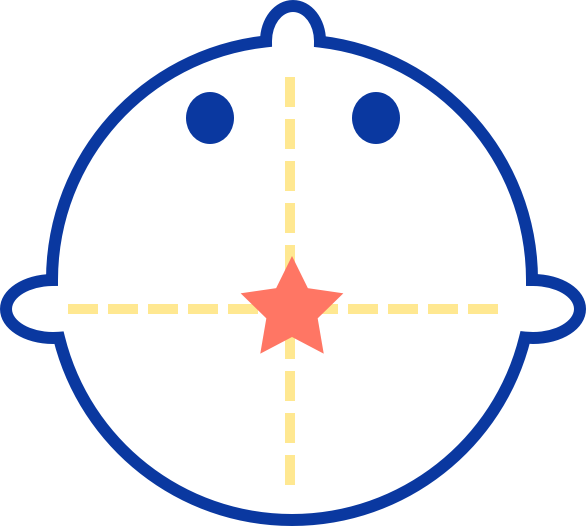
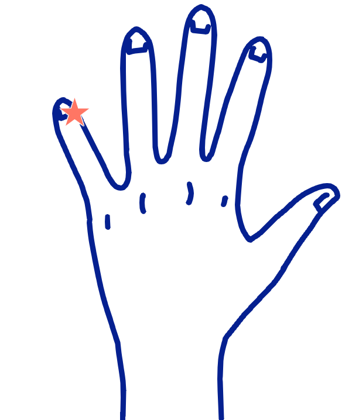

眠りたいのに眠れない…。誰しもそんな経験をお持ちではないでしょうか。
そこで今回はそんな眠れない時に試したい方法を5つご紹介します。
自分に合う方法を見つけて快眠ライフを手に入れましょう！
１．定番中の定番！ココアを飲んでリラックス
眠れない時の定番品と言えば「ココア」ですが、ではなぜココアが効くのかをご存知でしょうか。
実はココアにはカカオにのみ含まれるというテオブロミンが入っています。この成分は自律神経を整える作用を持っており、そのおかげでリラックスして安眠へと導いてくれるのです。
他にも、ココアには身体をゆっくり温めてくれる作用もあるので、冷え性気味の女性などにもおすすめです。
また、カフェインが気になる人も多いかと思いますが、これはごく少量なので眠れなくなる心配はないでしょう。
２．快眠BGMで気付けば夢の中に…
近年随分と身近になったのが、この「快眠BGM」です。
一口にBGMと言っても様々な種類がありますが、なかでもおすすめなのが雨の音です。
一定のリズムを刻む雨の降る音は、快眠に大切なα波を発生させてくれるでしょう。
反対に、歌詞のある音楽や激しい音楽は脳が冴えてしまうので注意が必要です。
３．意外？！お風呂に入ってみよう
「お風呂に入ったら目が冴えちゃう！」と思う人も多いかと思いますが、実はお風呂に入ることで眠くなる効果が期待できます。
人間は夜になるにつれ身体の熱を放出するのですが、その放出によって眠気が起きます。お風呂に入って身体を温めると、その後ゆっくりと体温が下がる時に眠くなるのです。
また、この時にシャワーだけで済ませてしまったり、熱いお風呂で急激に体温を上げてしまうと交感神経を刺激してしまうので注意が必要でしょう。
どうしてもゆっくりと浸かる時間が取れない時は、桶にお湯を汲み足湯をするのもおすすめです。
４．4-7-8呼吸法を試して1分で快眠へ
1分で眠れると最近話題になっているのがこの「4-7-8呼吸法」です。
別名マインドフルネス呼吸法とも呼ばれ、アリゾナ大学医学部のアンドリュー・ウェイル教授が編み出した呼吸法です。副交感神経の働きによってリラックス効果が期待でき、方法も簡単なのでぜひ試してみましょう。
4-7-8呼吸法のやり方
- (1)口を閉じ4秒間、鼻から息を吸い込む。
- (2)息を止め7秒間キープ。
- (3)8秒間で口から息をすべて吐き出す。この時「フー」と音が立つように意識する。
1～3を4回繰り返して終了です。
５．眠くなるツボを刺激して脳を睡眠モードへ
眠れない時におすすめのツボが頭にある「百会(ひゃくえ)」、指にある「小衝(しょうしょう)」、足の裏にある「失眠(しつみん)」の3つです。ここではそれぞれ詳しく説明していきます。
百会(ひゃくえ)

ストレスで眠れない時はこのツボがおすすめです。両方の耳たぶからまっすぐ頭上へと指を滑らせた中心、頭のてっぺん辺りにある少し柔らかな部分が百会(ひゃくえ)です。優しく押しては離しを繰り返すと良いでしょう。
小衝(しょうしょう)

同じくストレス性の不眠に効果的なのがこのツボです。手の小指の爪の付け根辺りにあるので、反対の指で挟みこみながら強く刺激すると良いでしょう。
失眠(しつみん)
不安で眠れない時はこのツボを刺激するのがおすすめです。
かかとのちょうど中心辺りにあるツボですが、少し強めの刺激でないと意味がないのでツボ押しグッズなどを使用すると良いでしょう。
無い場合はビー玉を踏みつけるようにして刺激してみてください。
まとめ
いかがでしたでしょうか。
今回は眠れない夜に試したくなる快眠方法を5つご紹介しました。
どれも特別な物は必要なく手軽に試せるので、ゆっくりと休みたい日に試してみてください。